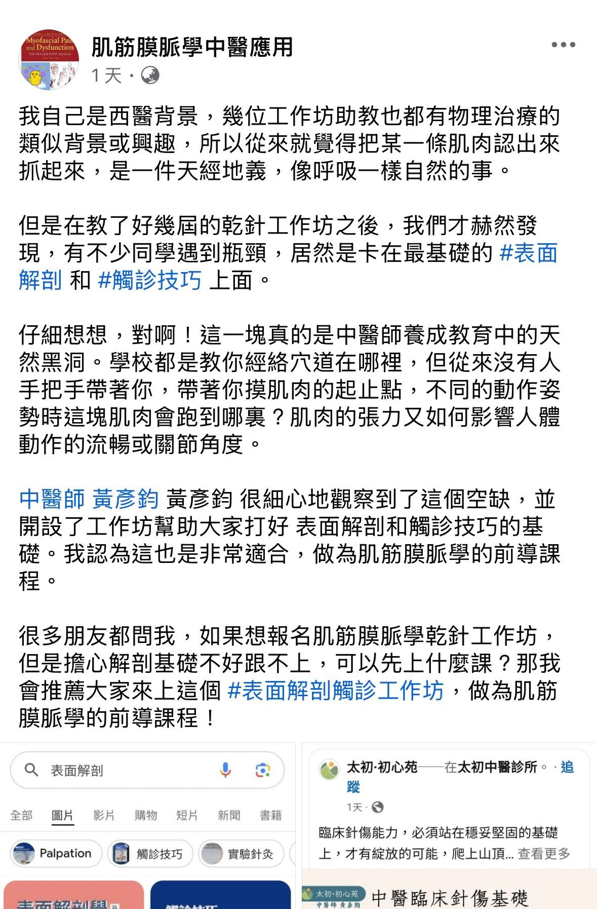
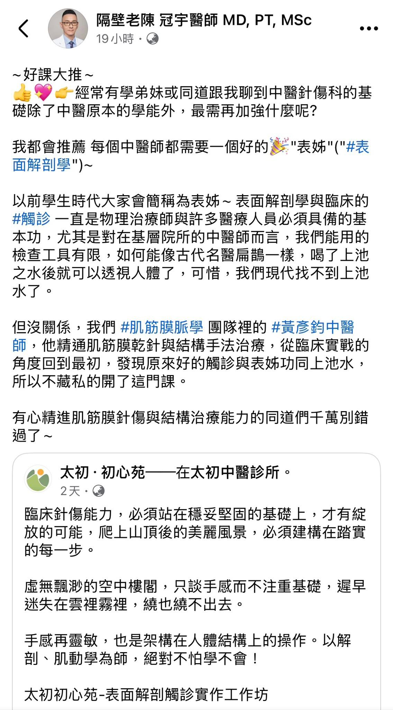
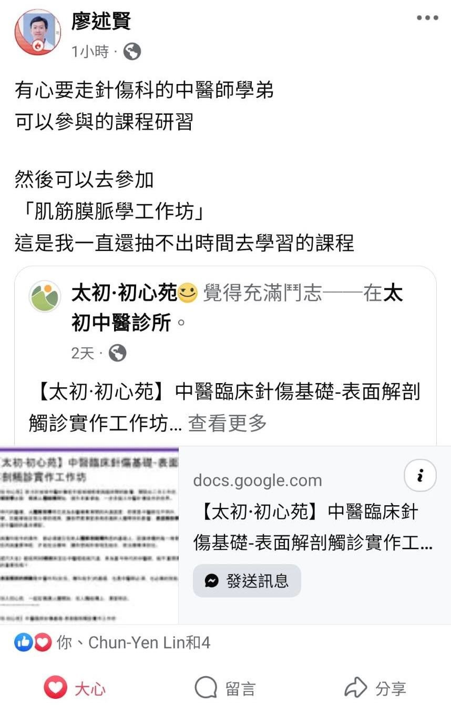
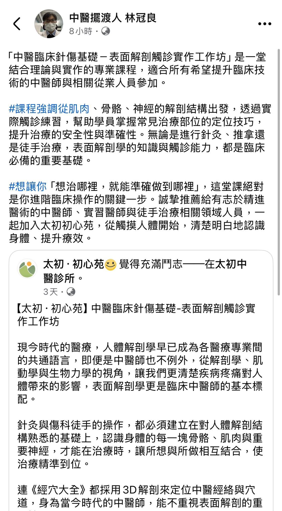
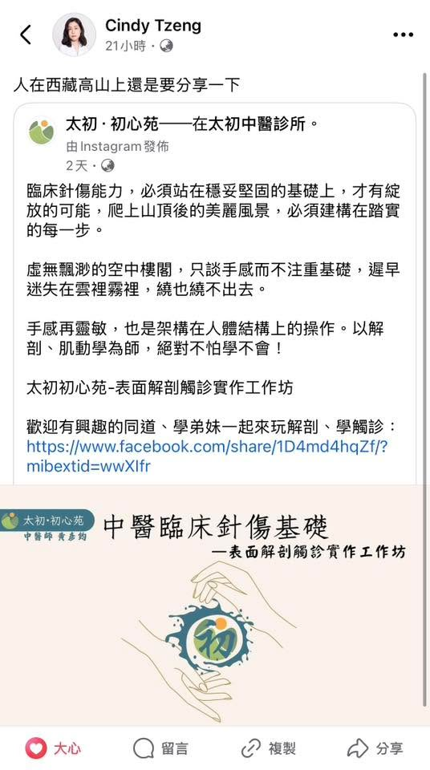
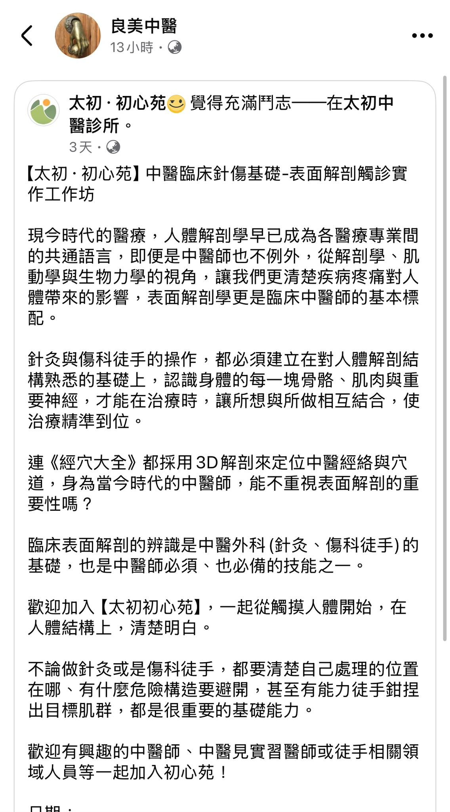
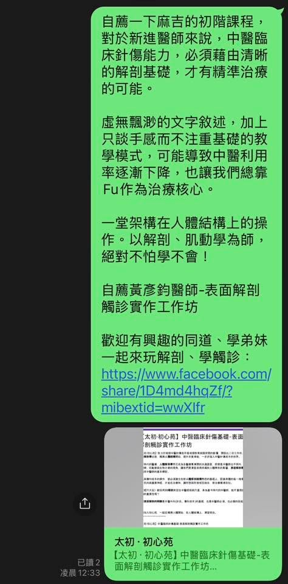
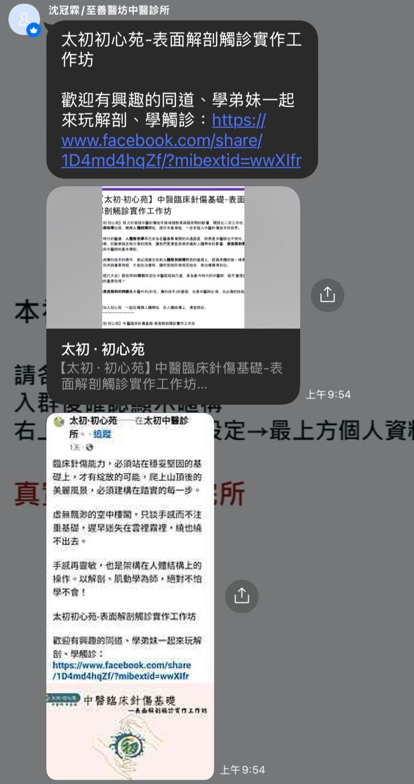
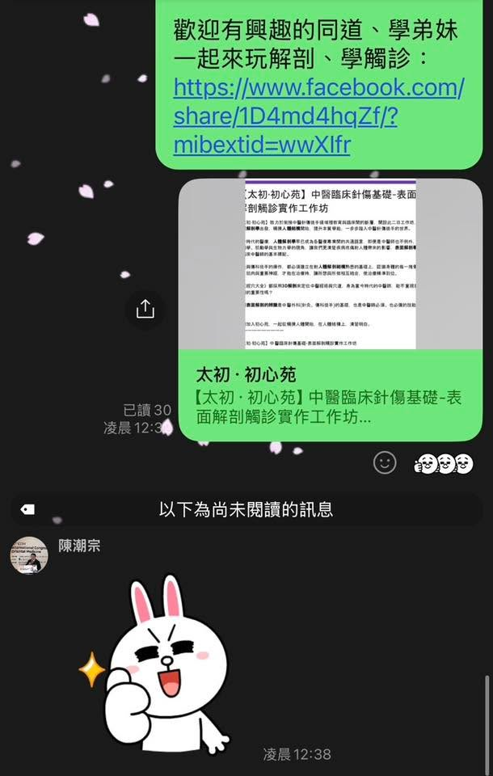

感謝各方前輩學長姐們大力推薦，太初·初心苑表面解剖觸診工作坊，目前第一梯次報名人…
感謝各方前輩學長姐們大力推薦，太初·初心苑表面解剖觸診工作坊，目前第一梯次報名人數已額滿，第二梯次名額剩7-8位！
有興趣的捧油趕快報名並匯款唷！（以匯款順序作為錄取順序）
表面解剖的觸診、骨骼標記與目標肌肉的鉗捏真的是針傷的基礎根本，也唯有學會表面解剖觸診，才能把課本的解剖學活生生的呈現在眼前，才能把2D的圖譜變成3D的人體結構，治療手段才能據此而有本有據的進行治療，也才能知其然並知其所以然，即便效果不如預期，也能有根據地去檢討反思，讓自己更上一層樓！
臨床治療總是複雜而千遍萬化，但根本的學問總離不開人體，離不開人體就離不開解剖學、肌動學。 馬步紮穩，掌握原理，外在手法就能千變萬化達到真正的醫者意也！
第二梯名額所剩不多，歡迎一起來從表面解剖開始，遨遊人體的山海經！








